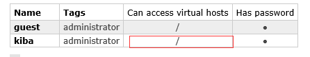

前言
我在刚接触使用中间件的时候，发现，中间件的使用并不是最难的，反而是中间件的下载，安装，配置才是最难的。所以，这篇文章我们从头开始学习RabbitMq，真正的从头开始。
关于消息队列
其实消息队列没有那么神秘，我们这样想一下，用户访问网站，最终是要将数据以HTTP的协议的方式，通过网络传输到主机的某个端口上的。
那么，接收数据的方式是什么呢？自然是端口监听啦。
那消息队列是什么就很好解释了？它就是端口监听，接到数据后，将数据排列起来。
那这件事，我们不用中间件能做吗？当然能做啦，写个TCP/UDP/Socket的软件就可以做啦。
举个简单的例子，如下图：
既然自己可以做消息队列，那为什么要用RabbitMQ？因为RabbitMQ成熟的开源中间件，可靠性有保证，bug少，性能也非常好。
而C#代码默认是使用托管内存的，所以想写出媲美RabbitMQ性能的消息队列，就必须离开我们常用的托管内存，使用非托管内存，但这个代价就太大了；而且最终能否达到RabbitMQ的性能水平还是个未知数。
还有就是RabbitMQ除了基础的消息队列管理，还有很多很强大的额外功能，而自己开发消息队列，很难如此尽善尽美。
----------------------------------------------------------------------------------------------------
我们还会发现，在消息队列里有很多概念，什么消息总线啊，什么工作队列啊等等。要怎么理解这些概念呢？
很简单，不要去理解。这些概念其实是人家代码架构的模式，不要去理解他们，【记】就完了，人家的中间件就是按照这个模式工作的。
比如，我写了一个接收消息的总控制器，然后我为他命名为总线，那这个控制器就是总线，没有理由，这就是定义。
准备工作
首先，我们访问官网【https://www.rabbitmq.com/】，点击Get Started。然后，网站会自动跳转到当前首页Get Started的锚点位置，如下图：
Get Started锚点：
然后我们点击DownLoad+Installation，进入到下载界面。在下载页面中，我们找到安装指南，然后在点击官网推荐的Windows系统的安装包，如下图：
现在，我们进入了Windows安装指南界面了。首先，我们看一下预览信息，如下图：
在预览里，我们得知，安装RabbitMQ有两种方法，一种是使用Chocolatey安装，一种是使用官方安装包安装。Chocolatey是什么呢?随手百度一下，原来他是一个软件包管理工具，也就是说，Chocolatey是类似于Nuget的一种工具。
由于Chocolatey的使用，我不是很熟悉，所以，这里选择使用官方安装包安装。点击【Using the official installer】，我们进入了【Using the official installer】对应的锚点，如下图。
在【Using the official installer】段落里找到有推荐标志的安装包，然后下载。下载完成后，我们可以得到这样一个安装包，如下图：
除了下载安装包，我们还会发现，在【Using the official installer】段落里，有提醒我们，RabbitMQ是有依赖的，依赖一个Erlang语言的框架（类似于C#语言的NetFramework）。
我们可以发现，在依赖的段落里，官网非常坑的给出了三个链接网址，如下：
supported version of Erlang：https://www.rabbitmq.com/which-erlang.html
Windows installer：https://www.erlang.org/downloads
Erlang Solutions：https://www.erlang-solutions.com/resources/download.html
因为，我们是无法通过文字描述来判断，哪一个是真的依赖框架的下载地址，所以只好每个都点击进去看看。。。
打开网址后发现，在后两个网址中都可以找到框架下载地址，但第二个地址明显更友好一点，所以我们在第二个网址内下载Erlang的框架。
下载完成得到如下图文件：
PS：这里下载的是OTP的22.1的版本，我的理解是Erlang等于C#语言，而OTP等于NetFramework。
安装Erlang\OTP
首先，我们运行otp_win64_22.1.exe，安装依赖框架Erlang\OTP。安装完成后，设置环境变量如下：
然后运行CMD，输入erl，测试安装是否成功，如下图：
安装成功。
安装rabbitmq-server
安装完依赖后，我们接着安装rabbitmq-server-3.8.0.exe。
【rabbitmq-server-3.8.0.exe】？从这个文件名上，我们发现了一个问题，那就是，我们即将安装的RabbitMQ，是一个服务端啊。
什么？服务端？难道还有客户端？？？
其实这也很好理解，想一下最开始我举的那个例子，消息队列是需要一个监听端口的服务端的，然后客户端向这个服务端发送请求。这样是不是就很好的理解RabbitMQ了呢：）
----------------------------------------------------------------------------------------------------
安装完RabbitMQ服务端后，我们还是启动CMD，用命令行来查看下安装状态。
首先输入下面的命令，将路径定位到RabbitMQ的路径下：CD C:\Program Files\RabbitMQ Server\rabbitmq_server-3.8.0\sbin
然后输入rabbitmqctl status查看状态。
启动管理工具的命令行：rabbitmq-plugins enable rabbitmq_management。
启动成功后，在浏览器输入地址http://127.0.0.1:15672/，进入管理页面，账户密码都是guest。
RabbitMQ还有很多常用命令，大家可以自行百度。
到此，RabbitMQ服务端的环境配置好了，正常情况，这些配置应该在服务器进行，但我为了测试方便，就把服务端也安装在本机了，因此我下面调用RabbitMQ时，连接的主机IP都是localhost。
----------------------------------------------------------------------------------------------------
RabbitMQ应用
首先创建两个控制台应用程序，KibaRabbitMQSend和KibaRabbitMQReceived。
然后引入RabbitMQ的开源类库。
在C#里使用RabbitMQ开源类库非常简单，可以去官网下载一个.NET版本的RabbitMQ客户端类库，也可以直接在Nuget上搜索RabbitMQ，然后安装，如下图：
KibaRabbitMQSend
安装完RabbitMQ开源类库后，我们编写代码，实现向RabbitMQ服务器发送消息，代码如下：
static void Main(string[] args)
{
var factory = new ConnectionFactory();
factory.HostName = "localhost";//主机名，Rabbit会拿这个IP生成一个endpoint，这个很熟悉吧，就是socket绑定的那个终结点。
factory.UserName = "guest";//默认用户名,用户可以在服务端自定义创建，有相关命令行
factory.Password = "guest";//默认密码
using (var connection = factory.CreateConnection())//连接服务器，即正在创建终结点。
{
//创建一个通道，这个就是Rabbit自己定义的规则了，如果自己写消息队列，这个就可以开脑洞设计了
//这里Rabbit的玩法就是一个通道channel下包含多个队列Queue
using (var channel = connection.CreateModel())
{
channel.QueueDeclare("kibaQueue", false, false, false, null);//创建一个名称为kibaqueue的消息队列
var properties = channel.CreateBasicProperties();
properties.DeliveryMode = 1;
string message = "I am Kiba518"; //传递的消息内容
channel.BasicPublish("", "kibaQueue", properties, Encoding.UTF8.GetBytes(message)); //生产消息
Console.WriteLine($"Send:{message}");
}
}
}
运行代码。
然后我们使用命令行rabbitmqctl list_queues，去RabbitMQ的服务器查看当前消息队列，如下图：
可以看到，我们的消息已经发送成功了。
KibaRabbitMQReceived
现在我们编写接收消息代码，如下：
static void Main(string[] args)
{
var factory = new ConnectionFactory();
factory.HostName = "localhost";
factory.UserName = "guest";
factory.Password = "guest";
using (var connection = factory.CreateConnection())
{
using (var channel = connection.CreateModel())
{
channel.QueueDeclare("kibaQueue", false, false, false, null);
/* 这里定义了一个消费者，用于消费服务器接受的消息
* C#开发需要注意下这里，在一些非面向对象和面向对象比较差的语言中，是非常重视这种设计模式的。
* 比如RabbitMQ使用了生产者与消费者模式，然后很多相关的使用文章都在拿这个生产者和消费者来表述。
* 但是，在C#里，生产者与消费者对我们而言，根本算不上一种设计模式，他就是一种最基础的代码编写规则。
* 所以，大家不要复杂的名词吓到，其实，并没那么复杂。
* 这里，其实就是定义一个EventingBasicConsumer类型的对象，然后该对象有个Received事件，
* 该事件会在服务接收到数据时触发。
*/
var consumer = new EventingBasicConsumer(channel);//消费者
channel.BasicConsume("kibaQueue", true, consumer);//消费消息
consumer.Received += (model, ea) =>
{
var body = ea.Body;
var message = Encoding.UTF8.GetString(body);
};
}
}
}
运行代码。
然后我们使用命令行rabbitmqctl list_queues，去RabbitMQ的服务器查看当前消息队列，如下图：
可以看到，消息已经被使用了。
----------------------------------------------------------------------------------------------------
现在我们在发送代码出做一个for循环，看看消息接收速度是什么样的，代码如下，for循环了100次，每次间隔3秒。
for (int i = 0; i < 100; i++)
{
channel.QueueDeclare("kibaQueue", false, false, false, null);//创建一个名称为kibaQueue的消息队列
var properties = channel.CreateBasicProperties();
properties.DeliveryMode = 1;
string message = "I am Kiba518"; //传递的消息内容
channel.BasicPublish("", "kibaQueue", properties, Encoding.UTF8.GetBytes(message)); //生产消息
Console.WriteLine($"Send:{message}");
Thread.Sleep(3000);
}
效果图如下：
可以看到，发送消息和接收消息，几乎是同步的，效果非常理想。
服务器端应用
在上文，我们的RabbitMQ服务是安装在我的本机上的；现在我们把服务移植到服务器上，然后再来测试一下。
在服务器端安装RabbitMQ和在本机安装的步骤是一样的，但是安装完成后，我们需要设置下防火墙的入站规则和出站规则，将5672的UDP端口开放一下。
为什么要开放端口是5672？因为RabbitMQ的默认的消息接收和发送端口就是5672，我们可以使用断点查看一下。
如上图，可以看到，在我们没有设置端口的时候，Endpoint的端口的默认值是5672。
配置完端口后，我们修改代码中的HostName为我们的服务器地址，如下。
factory.HostName = "1.1.1.1";
重新运行代码，会发现在运行到factory.CreateConnection()的时候，系统提示一个异常【RabbitMQ.Client.Exceptions.BrokerUnreachableException:“None of the specified endpoints were reachable”】，如下图：
这是因为我们使用的账号是guest，guest账号默认是不支持远程连接的。解决办法很简单，新建一个账户即可。
创建用户
在服务器端打开浏览器，输入http://127.0.0.1:15672/，进入管理页面。点击菜单栏的Admin选项，进入用户管理界面创建用户kiba，密码123456，如下图：
创建完用户后，得到如下界面。
如上图所示，刚刚创建的用户还没有任何访问权限。现在我们点击用户名，进入权限管理页面设置权限。
如上图所示，页面默认为我们设置了一个可读，可写，可管理配置的权限；所以，我们只要点击Set premission就可以了。设置完权限，我们回到用户管理页面。

如上图所示，权限设置成功。
现在我们回到代码，修改用户名密码如下。
factory.HostName = "1.1.1.1";
factory.UserName = "kiba";
factory.Password = "123456";
运行代码，不再抛异常，接受发送消息正常。
----------------------------------------------------------------------------------------------------
设置用户权限也可以通过命令的方式设置，如下：rabbitmqctl set_permissions -p "/" kiba "." "." ".*"
----------------------------------------------------------------------------------------------------
到此C#调用RabbitMQ实现消息队列就讲完了。